Log your overtime and Protection Allowance, see what it'll actually pay after tax, and keep track of what still needs submitting. Works on your computer and your phone, kept in sync.
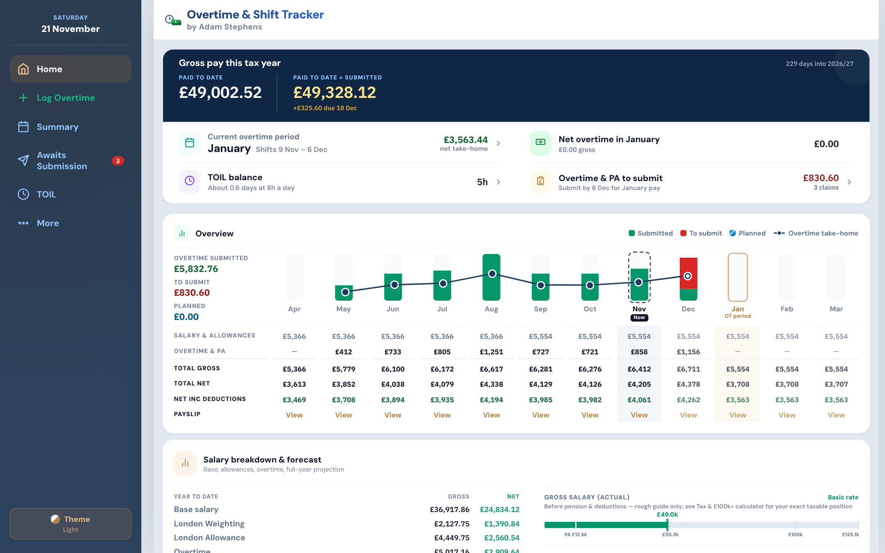
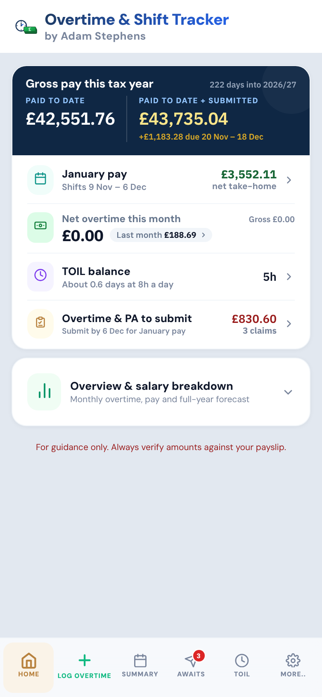
In Chrome or Edge, click the install icon at the right of the address bar to give it its own window. Or just bookmark it.
Open it in Safari, tap Share, then Add to Home Screen.
Open it in Chrome, tap the ⋮ menu, then Install app.
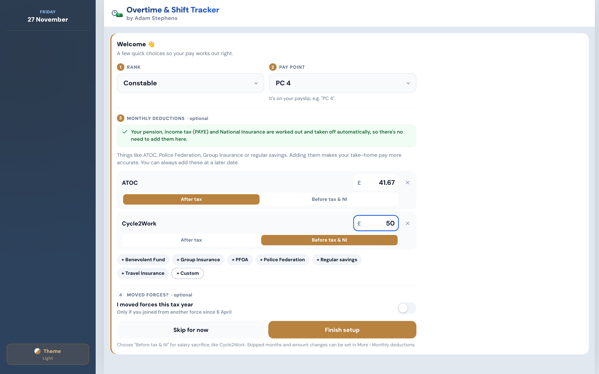
Three steps, shown in a bar at the top. Sign up with your email (a personal one works best) and a password. Open the email from OT Tracker, tap its link, then Confirm my email and sign in. Then pick a recovery word, the only way back to your data if you forget your password. Capitals don't matter; write it down.
Pick your rank, then your pay point (it's on your payslip, e.g. "PC 4"). Step 3, monthly deductions, is optional: tap the ones you pay or + Custom, enter the monthly amount, and choose Before tax & NI for salary sacrifice. Then Finish setup, or Not right now to add deductions later.
The rest of the app opens once setup is finished, so every figure is worked out on your real pay.
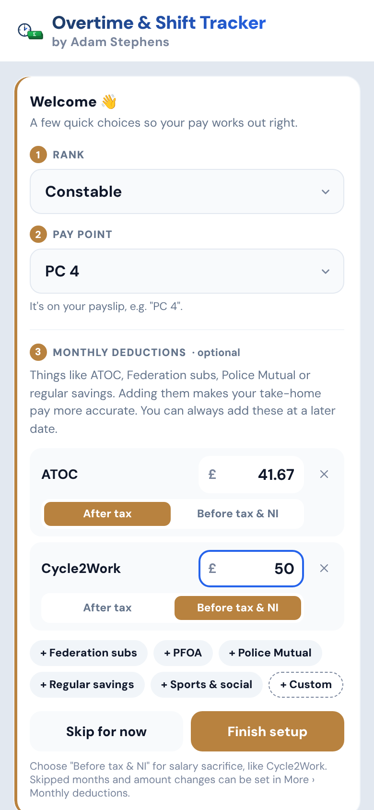
On a computer the menu sits down the left: Home, Log Overtime, Summary, Awaits Submission (with a count of claims still to submit), TOIL and More, with the date and your theme underneath. On a phone the same menu runs along the bottom.
| Gross pay this tax year | Paid to date, and with overtime you've submitted but haven't been paid for yet. With a P45 from another force it splits into £x Met and £y previous force. |
| Current overtime period | The pay month your shifts are going into now, its shift dates, and its net take-home after tax, NI, pension and your deductions. |
| Net overtime | That month's overtime after tax, with the gross underneath. |
| TOIL balance | Hours banked and not yet taken. |
| Overtime & PA to submit | What's still to go on CARMS and PSOP, and the date to submit by. |
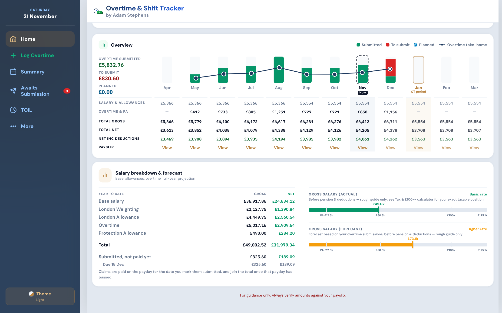
A column for every pay month: green submitted, red still to submit, striped planned. The line is your overtime take-home. This month is tagged Now. Underneath, each month's salary and allowances, overtime and PA, total gross, total net, net inc deductions (what reaches your bank) and a View link to that month's expected payslip.
Click a month to open it in Summary, in whichever view you've starred as your default. On a phone, tap a month to see the same rows, then View payslip.
The year to date, gross and net: base salary, London Weighting, London Allowance, overtime and Protection Allowance. Gauges show your gross pay so far and forecast for the year against the tax bands.
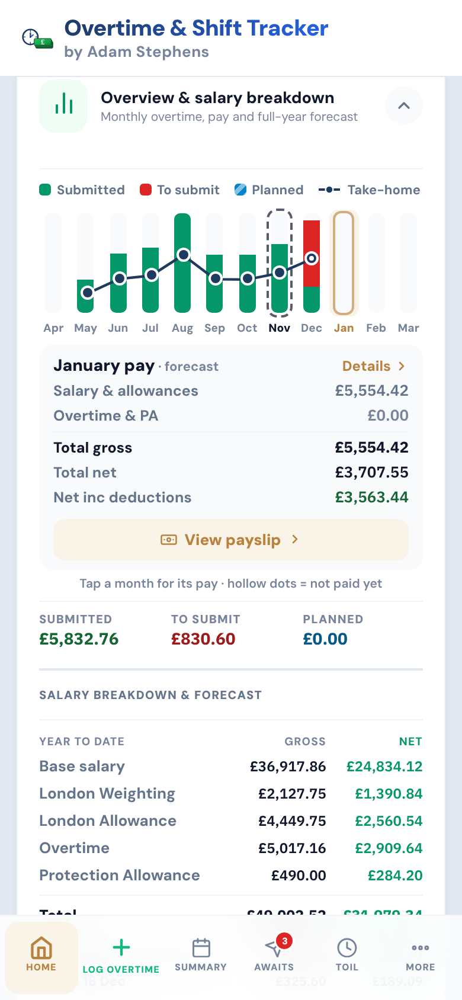
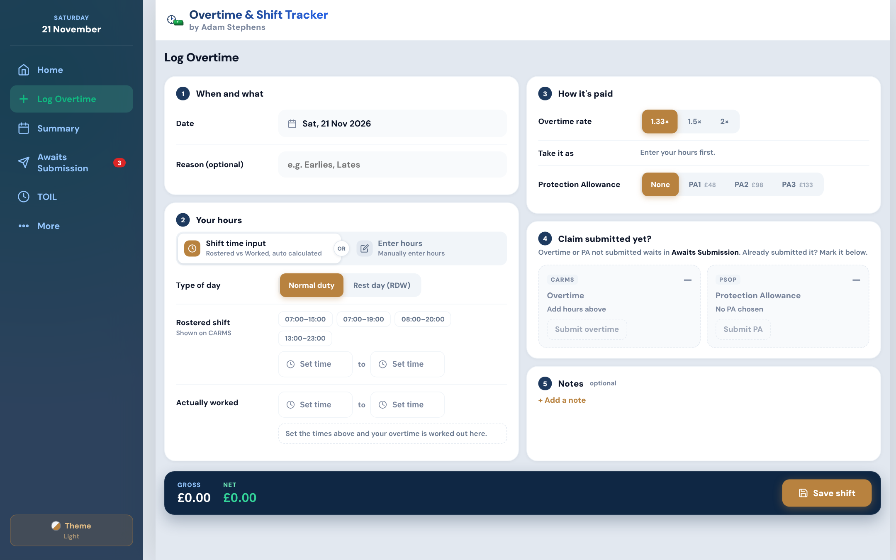
| 1 · When and what | The date, and a reason if you like (Earlies, Lates, an event). |
| 2 · Your hours | Shift time input: enter rostered and actually-worked times and the overtime is worked out for you. Or Enter hours yourself. Pick Normal duty or Rest day (RDW). |
| 3 · How it's paid | The rate (1.33×, 1.5× or 2×), whether to take it as pay, TOIL or a mix, and any Protection Allowance (PA1 £48, PA2 £98, PA3 £133). |
| 4 · Claim submitted yet? | Mark it once the overtime is on CARMS and the PA on PSOP. Each is paid in the pay month you submit it. |
| 5 · Notes | Optional. |
The bar at the bottom shows the shift's gross and net as you go, worked out on top of everything else you've earned this tax year. Save shift when you're done.
It only counts once it's marked submittedLogging a shift isn't enough. Until you mark the overtime (and any PA) as submitted, it isn't added to your pay, payslips, take-home or tax: it waits in Awaits Submission instead. Submit it on CARMS / PSOP, then mark it in step 4, Claim submitted yet?, or from Awaits Submission.
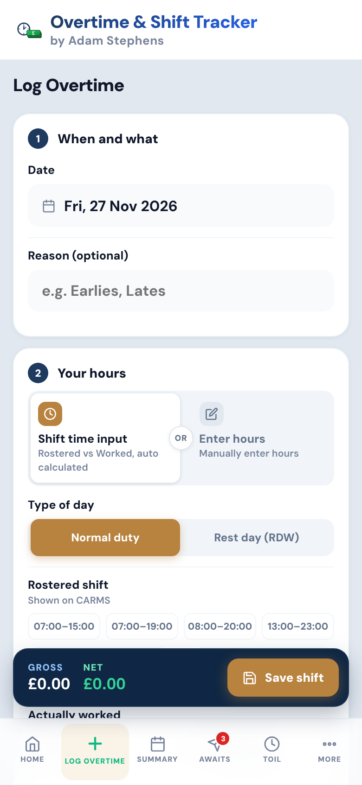
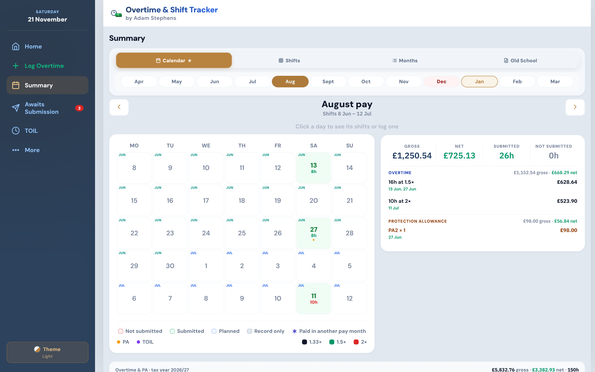
The shifts paid in each pay month. Pick a month from the row of months or with the arrows; on a computer its totals, overtime and PA sit alongside.
| Calendar | The month's shift dates as a calendar. Click a day to see its shifts or log one; the key underneath explains the colours. |
| Shifts | A compact list of the month's shifts with their gross and net. |
| Months | Every pay month in the year, with the current overtime period already open. Click any other month to see its overtime, PA and shifts. |
| Old School | The month laid out like the paper overtime sheet. |
Click the ★ on a view to make it your default: Summary always opens on it, and so do links from Home.
Pay months run on shift dates: "August pay" covers shifts worked 8 June to 12 July. The dates are shown under each month.
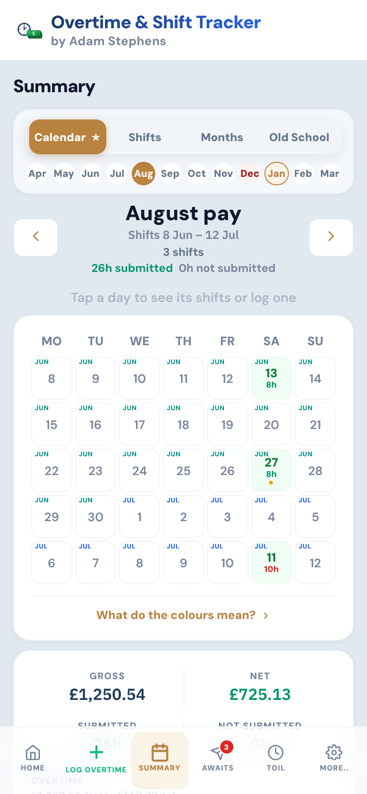
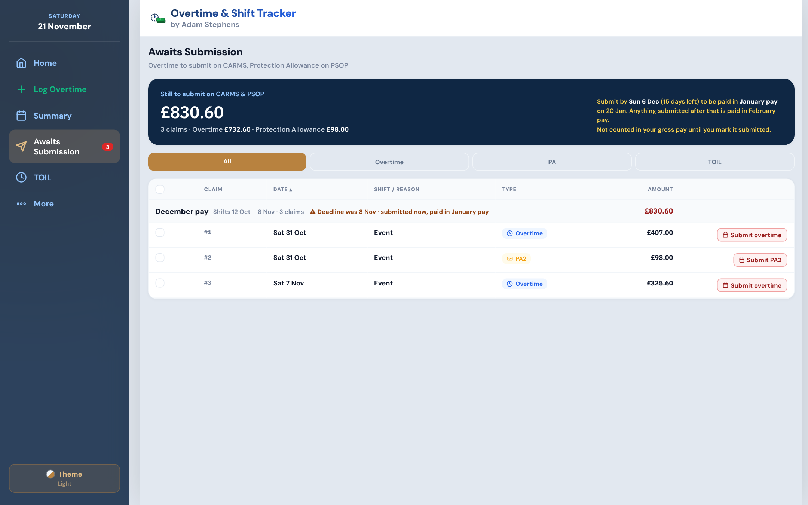
Every claim you've logged but not yet marked submitted: overtime for CARMS, PA for PSOP, grouped by the pay month they'll land in. The panel at the top shows the total, the deadline for the next payday, and what happens if you miss it. Filter by Overtime, PA or TOIL, and click Submit as you put each one in. Future shifts join once their date arrives.
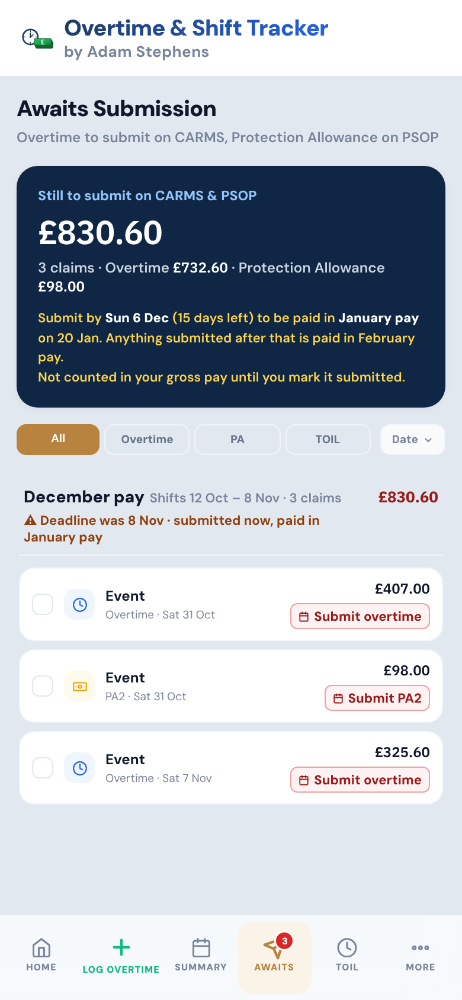
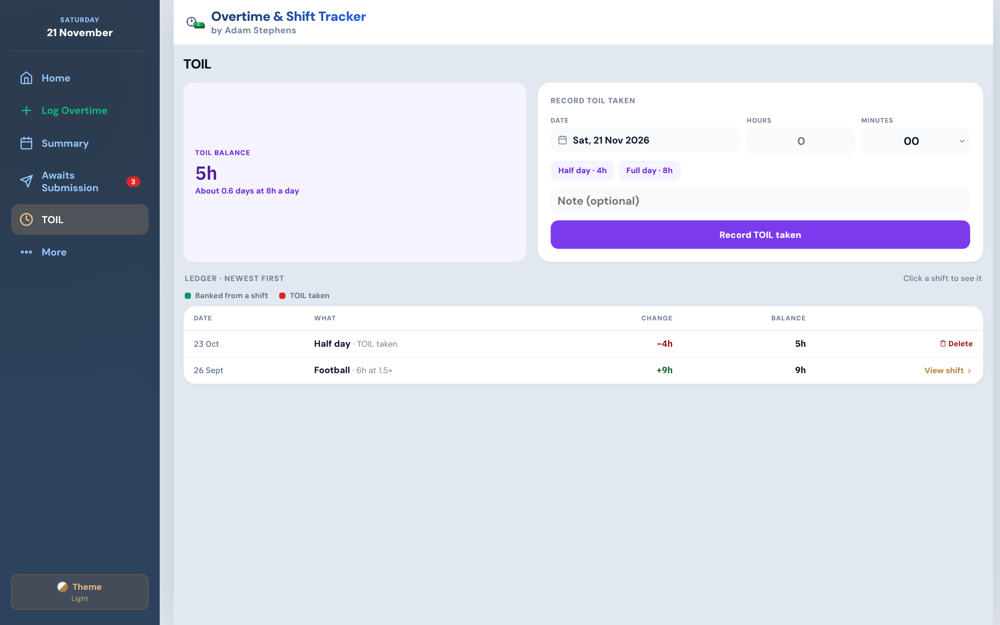
Your balance, banked from shifts taken as TOIL or a mix (6 hours at 1.5× banks 9). Record TOIL you've taken with the date and hours, or Half day and Full day. The ledger lists everything banked and taken; click a banked shift to see it.
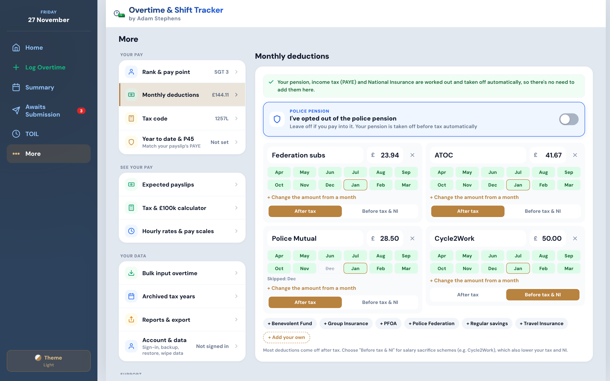
On a computer, More lists its headings on the left and opens the one you pick on the right; on a phone, tap a heading, then ‹ More to go back. Deductions are anything else taken off your payslip, so net inc deductions matches your bank.
| Rank & pay point | Your rank, pay point, and pay point changes with their start date. |
| Tax code · Year to date & P45 | Your tax code, and your payslip's year-to-date figures or a P45 from another force. |
| Expected payslips | Each month laid out like your payslip: payments, deductions and net pay. |
| Bulk input overtime | Overtime already paid this tax year, as one figure. |
| Account & data | Sign in or out, back up, restore or wipe your data. |
| My Other Apps NEW | ATOC Zone Check and Barclaycard Expense Builder, opening in a new tab. |
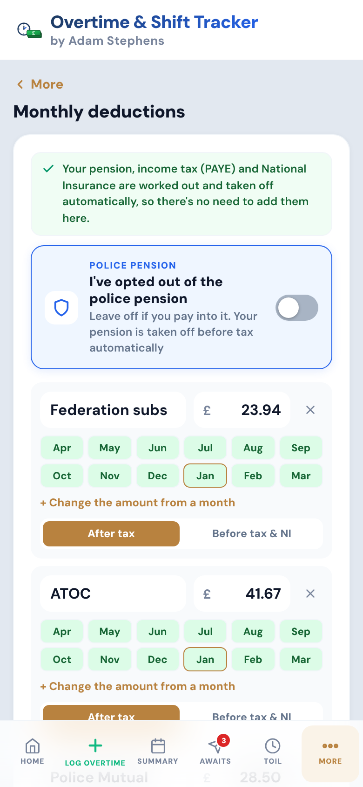
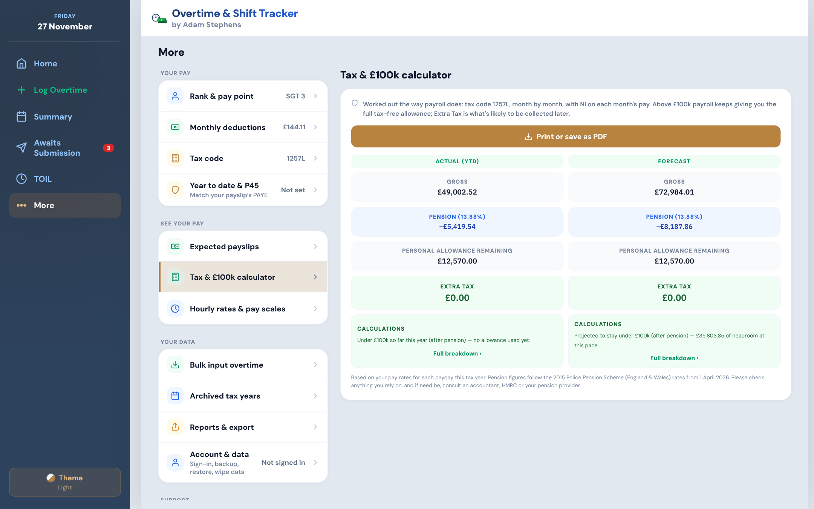
Actual (the paydays so far this tax year) beside Forecast (the full year at your current pay and overtime).
| Pension | Police pension, taken before tax, at your tier's rate. |
| Personal allowance | Normally £12,570. Above £100,000 (after pension) you lose £1 of it for every £2 over. |
| Extra tax | The tax on that lost allowance. Payroll doesn't take it during the year, so it usually arrives as a tax code change or a Self Assessment bill. |
Full breakdown shows the tax band by band, NI and net pay. Print or save as PDF gives you a copy.
Between £100,000 and £125,140 each extra £1 of overtime costs about 60p in tax plus 2p NI. Pension contributions or Gift Aid can bring you back under.
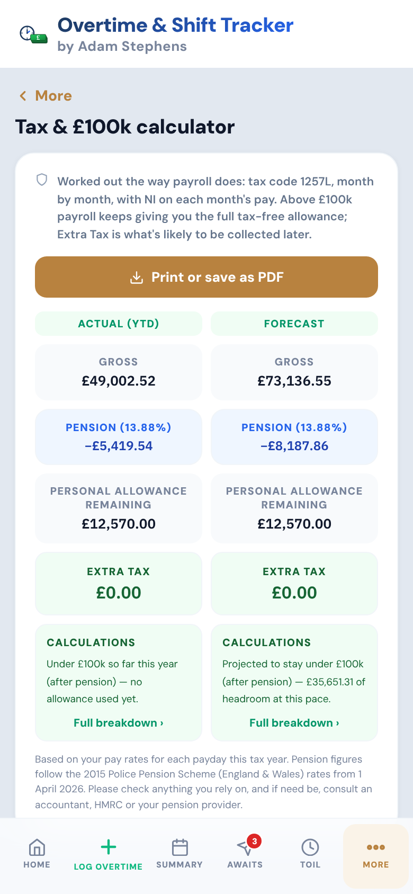
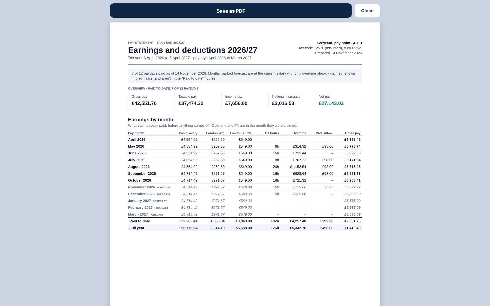
Reports & export › Export to PDF or spreadsheet › PDF, choose a Pay month, Custom range or whole Tax year, then Create PDF. You see the actual A4 pages; Save as PDF downloads the file on a computer, or opens the share sheet on a phone so you can save it to Files or email it.
Taxable pay should match the "Pay" figure on your P60. Give your accountant the statement with your P60 and payslips; those are the final word.
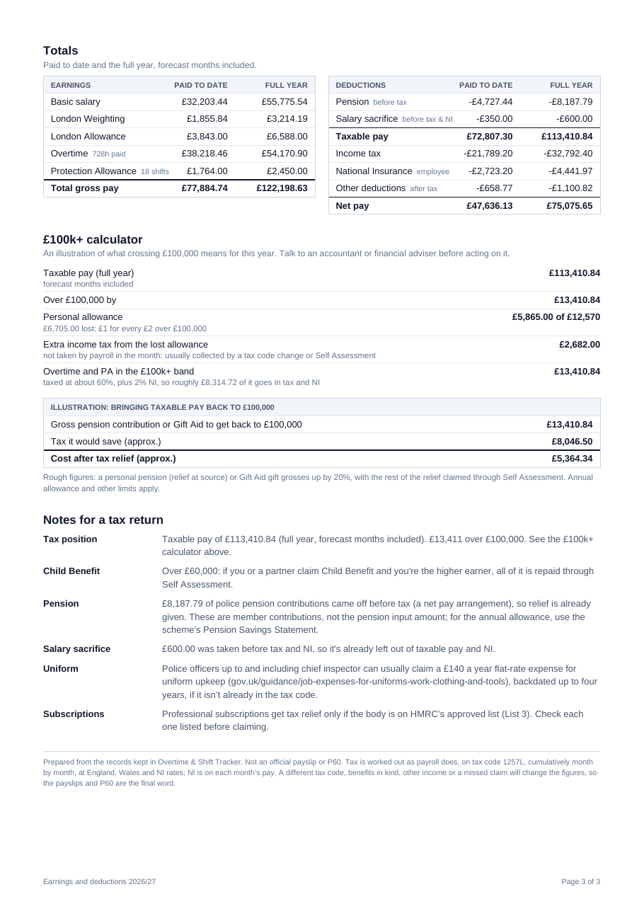
Sign in with the same account on each. Shifts, TOIL, settings, deductions and your theme sync automatically, usually within seconds and as soon as you bring the app back to the front. No signal? Carry on: changes are saved on the device and sent up when you're back online. If the same thing is changed on two devices, the most recent change wins.
When a new version is ready you'll see an update prompt. Click it to load the latest. On a computer it stays until you do, so if something looks out of date on one device, update that one first.
| My take-home doesn't match | Check your monthly deductions, pay point and Tax code in More against your payslip. |
| My overtime isn't in my pay | It hasn't been marked submitted. Only submitted overtime and PA count towards pay, payslips and tax. Mark it on the shift or in Awaits Submission. |
| Overtime is in the wrong month | Overtime is paid in the pay month you submit it, not when you worked it. Check the submitted date on the shift. |
| A theme or setting isn't syncing | Update both devices (the update prompt, or close and reopen the app) and check they're signed into the same account. |
| No confirmation email | Check your junk folder for an email from OT Tracker, or Resend it. Work email often blocks it, so use a personal one if you can. |
| Forgot my password | Forgot password on the sign-in screen, then your recovery word to unlock your data. |
Questions or ideas? More › Help & suggestions. Figures are for guidance only: always check against your payslip.